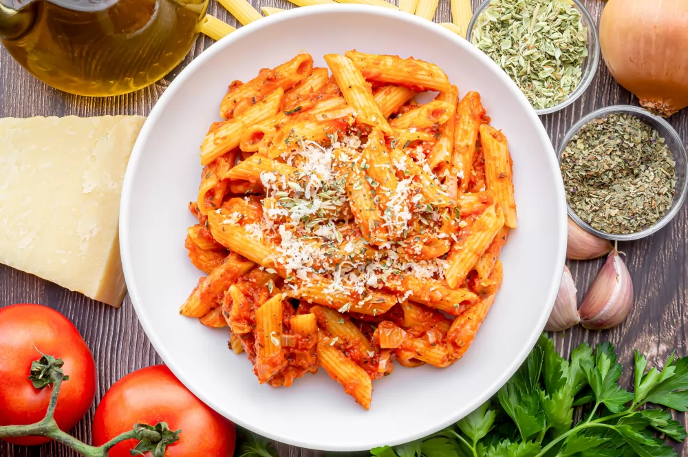

Document
Macarrones

Description
Macaroni is a type of Italian pasta, cylindrical and hollow, made from durum wheat semolina, water, and sometimes egg. It could undoubtedly be considered one of the most popular types of pasta worldwide. And it's no wonder, as it's a simple, inexpensive, and nutritious food that's a staple in many homes. How could it not be, when it's enjoyed by children and adults alike?
Ingredients
- Macarrones
- Tomato Sauce
- Cheese
- Onion
- Pepper
Back to Home